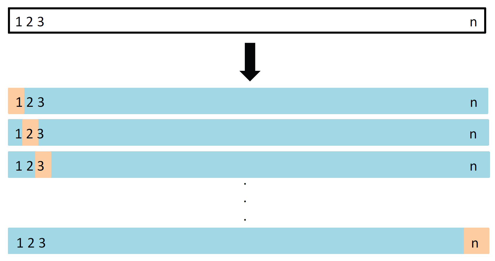

Chapter 16 Resampling Methods
Reference: Ch5 in An introduction to Statistical Leraning with applications in R by James, Witten, Hastie and Tibshirani.
Packages used: caret, boot
Resampling methods involve repeatedly drawing samples from a training set and refitting a model of interest on each resampled data set to obtain additional information about the fitted model. We will study two methods called cross-validation and bootstrap.
Cross-validation can be used to
estimate the test error of any learning methods in order to evaluate its performance (model assessment)
select a tuning parameter / the appropriate level of flexibility (model selection)
Bootstrap can be used to measure the accuracy of a parameter estimate, among other uses. We will see another application of bootstrap when we discuss ensemble methods.
16.1 Cross-validation
Recall that in evaluating the model performance in previous chapters, we have partition our data into training and testing datasets. This is known as the holdout method.
For quantitative response, we usually use the mean squared error (MSE) to measure the error: \(\frac{1}{n} \sum^n_{i=1} (y_i - \hat{y}_i)^2\), where \(y_i\) is the observed value and \(\hat{y}_i\) is the predicted value. The test error is the MSE computed using only the test data.
However, the test error obtained using the above holdout method depends on the particular training and testing split. That is, if you split the dataset differently, the test error will be different.
The following simple example illustrates this general observation.
set.seed(1)
x <- runif(100, 0, 1)
y <- 1 + x + rnorm(100, 0, 1)
# Split 1
fit <- lm(y[1:50] ~ x[1:50])
# test error:
sum((y[51:100] - predict(fit, data.frame(x[51:100])))^2)
## [1] 64.65385
# Split 2
fit <- lm(y[51:100] ~ x[51:100])
# test error:
sum((y[1:50] - predict(fit, data.frame(x[1:50])))^2)
## [1] 60.45979To get a better test error estimate, we can use repeated holdout. That is, we repeat the whole splitting process several times with several random holdout samples and take the average of the performance measures to evaluate the model performance.
A standard practice now is to use \(k\)-fold cross-validation (\(k\)-fold CV). It is a procedure in which instead of randomly partition the data many times, we divide the data into \(k\) random non-overlapping partitions. Then, we combine \(k-1\) partitions to form a training dataset and the remaining one to form the testing dataset. We repeat this procedure \(k\) times using different partitions and obtain \(k\) evaluations. It is common to use \(10\)-fold CV.
For example, when \(k=3\):
- Randomly split your dataset \(S\) into \(3\) partitions \(S_1,S_2,S_3\).
- Use \(S_1, S_2\) to train your model. Evaluate the performance using \(S_3\).
- Use \(S_1, S_3\) to train your model. Evaluate the performance using \(S_2\).
- Use \(S_2, S_3\) to train your model. Evaluate the performance using \(S_1\).
- Report the average of the performance measures obtained in Steps 2-4.
See https://en.wikipedia.org/wiki/File:KfoldCV.gif for a gif animation showing the \(k\)-fold CV.
{kind=link}
Leave-one-out CV (LOOCV)

5-fold CV

16.1.1 CV in GLM
We can perform CV for linear regression and logistic regression using cv.glm() from the package boot.
For the purpose of using cv.glm(), instead of using lm() to fit a linear regression, we will use glm() without specifying the family argument. The following two methods will give you the same result.
toy_data <- data.frame(y = y, x = x)
glm(y ~ x, data = toy_data)$coef
## (Intercept) x
## 0.8206746 1.3123431
lm(y ~ x, data = toy_data)$coef
## (Intercept) x
## 0.8206746 1.3123431Use cv.glm() without setting the values of \(K\) in the argument to perform leave-one-out CV:
library(boot)
fit <- glm(y ~ x, data = toy_data)
cv_error <- cv.glm(data = toy_data, glmfit = fit)
cv_error$delta
## [1] 0.9047164 0.9045299Use cv.glm() with \(K = 10\) to perform \(10\)-fold CV:
16.1.2 General Implementation
In general, you may or may not be able to find the CV function that helps you to implement the CV to estimate the test error for a particular method. However, you can implement \(k\)-fold CV easily by yourself. For simplicity, we illustrate the implementation using a simple linear regression model. But the idea is the same for other methods.
To create the \(k\) partitions, we can use createFolds() from the caret package.
library(caret)
set.seed(1)
x <- runif(100, 0, 1)
y <- 1 + x + rnorm(100, 0, 1)
CV_example <- data.frame(x = x, y = y)
folds <- createFolds(y, k = 10) # the result is a list
test_error <- rep(0, 10)
for (k in 1:10) {
# fit the model without one partition
fit <- lm(y ~ x, data = CV_example[-folds[[k]], ])
# MSE as the test error
test_error[k] <- sum((CV_example$y[folds[[k]]] -
predict(fit, CV_example[folds[[k]], ]))^2) / length(folds[[k]])
}
# average
mean(test_error)
## [1] 0.907166916.2 Bootstrap
In this section, we illustrate how to use bootstrap to estimate the standard error of an estimate. In later chapter when we discuss ensemble methods, you will see other uses of bootstrap.
Suppose there are two stocks \(A\) and \(B\) with returns \(r_A\) and \(r_B\), respectively. You decide to invest \(\alpha\) of your money in \(A\) and \(1-\alpha\) of your money in \(B\). The way that you want to determine \(\alpha\) is to minimize the risk (measured as the standard deviation of the portfolio return). For any \(\alpha\), the portfolio return is given by \[\begin{equation*} r_P = \alpha r_A + (1-\alpha) r_B. \end{equation*}\] The variance of the portfolio return is \[\begin{equation*} \sigma^2_P = \alpha^2 \sigma^2_A + (1-\alpha)^2 \sigma^2_B + 2\alpha(1-\alpha) \sigma_{AB}, \end{equation*}\] where \(\sigma^2_A\) and \(\sigma^2_B\) are the variance of \(r_A\) and \(r_B\), respectively, and \(\sigma_{AB}\) is the covariance between the two returns. Straightforward calculation shows that the minimizer of \(\sigma^2_P\) is \[\begin{equation*} \alpha = \frac{\sigma^2_A - \sigma_{AB}}{\sigma^2_A + \sigma^2_B - 2\sigma_{AB}}. \end{equation*}\] Since in reality \(\sigma^2_A, \sigma^2_B, \sigma_{AB}\) are unknown, we have to estimate them using the past data. After obtain these estimates (denoted with the hat in the notation), the estimate of \(\alpha\) will be given by \[\begin{equation*} \hat{\alpha} = \frac{\hat{\sigma}^2_A - \hat{\sigma}_{AB}}{\hat{\sigma}^2_A + \hat{\sigma}^2_B - 2\hat{\sigma}_{AB}}. \end{equation*}\]
It is natural to wish to quantify the accuracy of our estimate of \(\alpha\). The bootstrap theory tells you that you can sample observations from the original data set repeatedly, compute the corresponding estimate of \(\alpha\) and use the estimates of \(\alpha\) to estimate the standard error of the original estimate \(\hat{\alpha}\).
Nonparametric bootstrap algorithm:
Sample with replacement \(n\) observations from the original data set
Compute an estimate of \(\alpha\).
Repeat Step 1-2 \(B\) times to obtain \(\hat{\alpha}^{(1)}, \ldots,\hat{\alpha}^{(B)}\).
Compute the sample standard deviation of \(\hat{\alpha}^{(1)}, \ldots,\hat{\alpha}^{(B)}\), denoted by \(SE_B(\hat{\alpha})\).
Then, use \(SE_B(\hat{\alpha})\) as an estimate of the standard error of \(\hat{\alpha}\) estimated from the original data set.
Use boot() from the package boot to implement bootstrap. To use boot(), we have to create a function which takes our data as input as well as a vector indicating which observations should be used. The output should be our estimate of interest.
set.seed(1)
rA <- rnorm(100, 0.01, 0.05)
rB <- 0.5 * rA + rnorm(100, 0, 0.05)
return_data <- cbind(rA, rB)
est_alpha <- function(data, index) {
rA <- data[index, 1]
rB <- data[index, 2]
(var(rB) - cov(rA, rB)) / (var(rA) + var(rB) - 2 * cov(rA, rB))
}
boot(return_data, est_alpha, R = 1000)
##
## ORDINARY NONPARAMETRIC BOOTSTRAP
##
##
## Call:
## boot(data = return_data, statistic = est_alpha, R = 1000)
##
##
## Bootstrap Statistics :
## original bias std. error
## t1* 0.6390998 0.0002071561 0.07488879Without using boot():